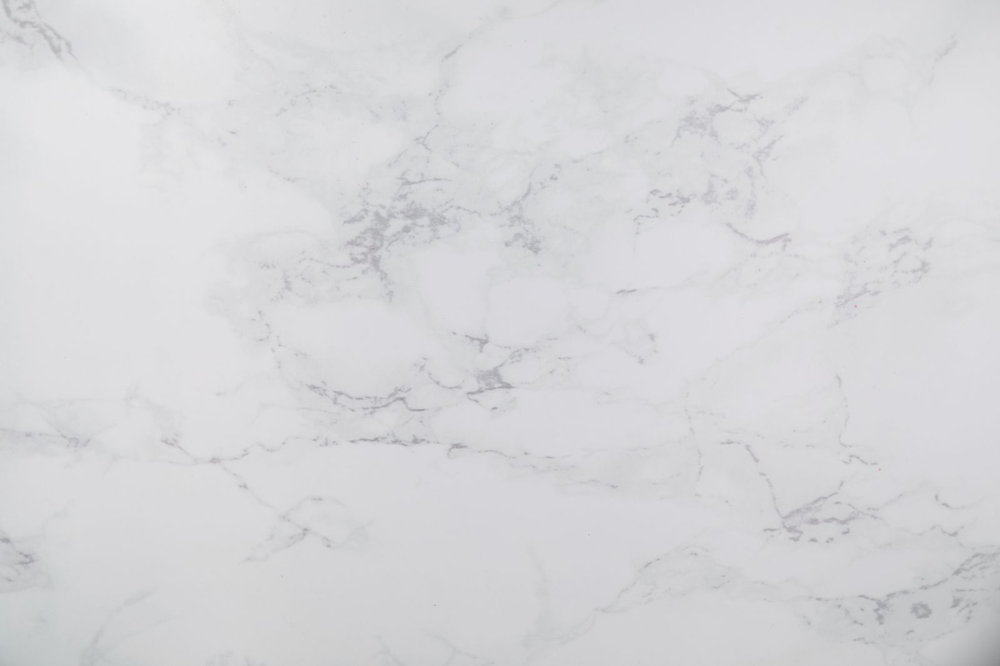
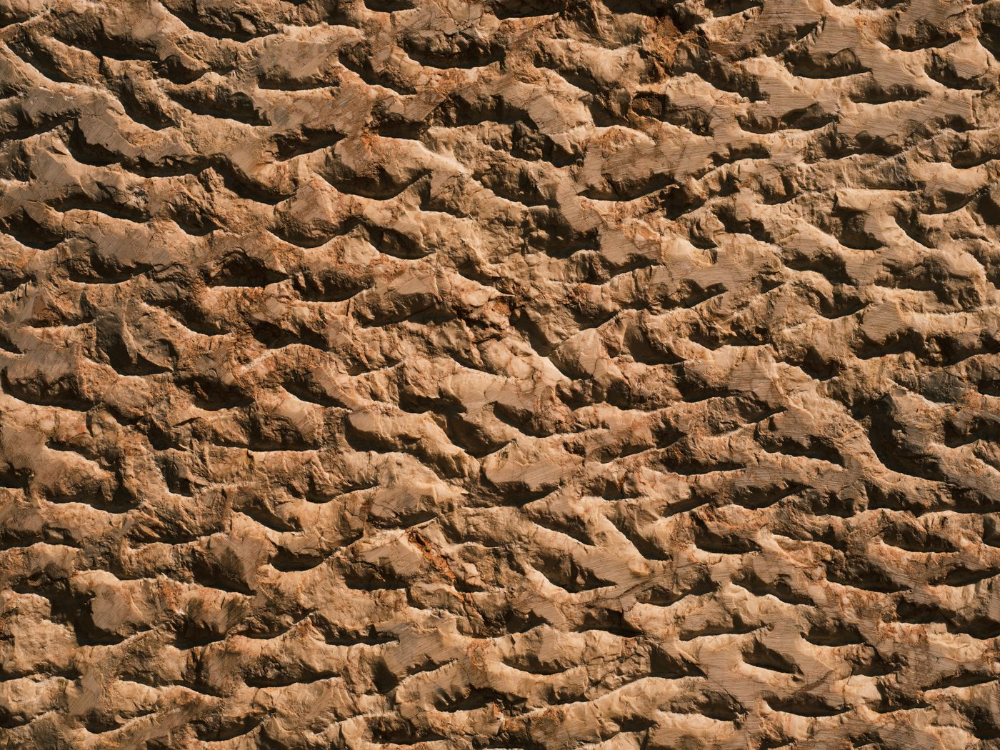

MÁRMOLES Y GRANITOS
GARCÍA CHAVES

Tu consulta.
Directamente
con nosotros.
Un nombre.
Dos materiales.
Un contacto directo.
Mármoles y Granitos Hnos. García Chaves S. L.
Nuestra actividad está vinculada al mármol y al granito. Nos encontrarás en el Polígono Industrial Huerto Blanquillo, en El Bosque, Cádiz.
Si estás valorando un material o tienes una necesidad concreta, habla con nosotros. Consulta las opciones disponibles y el alcance de tu encargo antes de decidir.
Hablemos de lo que necesitasMármoles Granitos
EL BOSQUE · CÁDIZLa diferencia
está en la materia.
Dos formas de leer una superficie.
Vetas, grano y variaciones naturales.
Mármol
Una superficie que se reconoce por el dibujo de sus vetas y sus variaciones de tono. Cada detalle invita a mirar la piedra de cerca.
Granito
La presencia de los granos minerales da forma a su textura característica. Una lectura diferente del color y de la superficie.

Estas imágenes son un estudio visual de materiales. No muestran existencias, acabados disponibles ni trabajos de García Chaves. Consulta por teléfono los materiales y las opciones actuales.
CONSULTAR DISPONIBILIDADAntes de elegir,
concretemos.
Una conversación permite saber qué necesitas y qué opciones podemos ofrecerte.
El material
Cuéntanos si buscas mármol o granito. Pregunta por las opciones disponibles en este momento.
La necesidad
Explica el uso que tienes en mente y las medidas orientativas, si las conoces, para concretar tu consulta.
Los detalles
Confirma directamente la viabilidad de tu encargo, las condiciones y los plazos antes de dar el siguiente paso.
El Bosque.
Cádiz.
11670
ANDALUCÍA
Huerto Blanquillo
Polígono Huerta Blanquillo, 3
11670 El Bosque, Cádiz
Abre la dirección en el mapa para preparar tu desplazamiento. Confirma el horario por teléfono antes de venir.
CÓMO LLEGAR GOOGLE MAPS · NUEVA PESTAÑALa siguiente pieza:
tu consulta.
Materiales, disponibilidad y detalles de tu encargo.
Habla directamente con García Chaves.